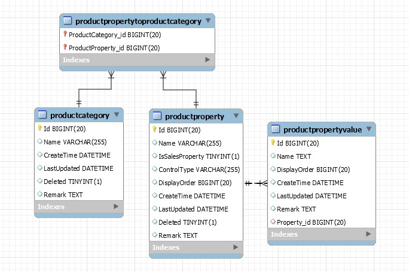
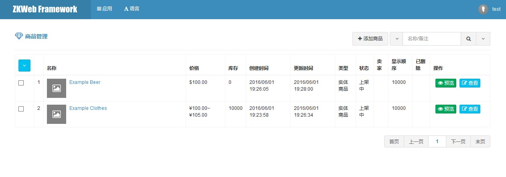
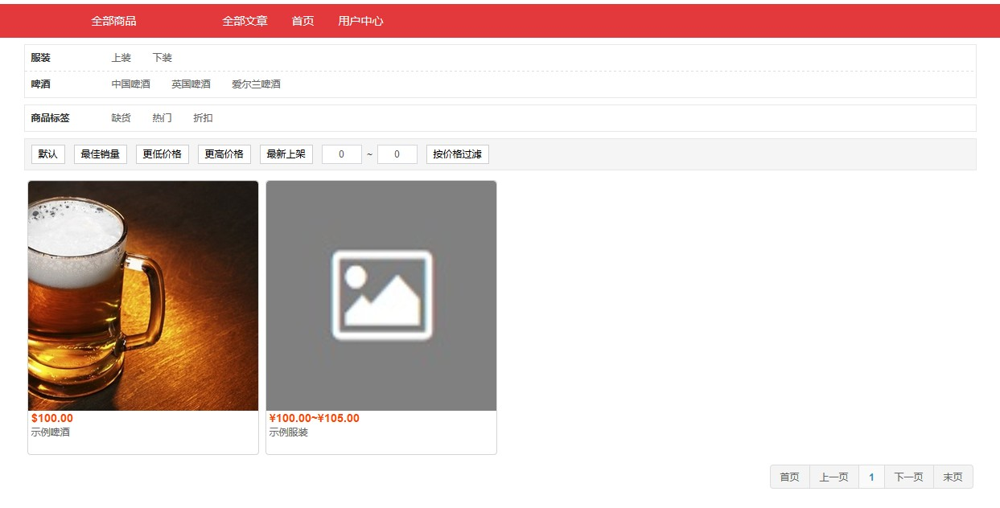
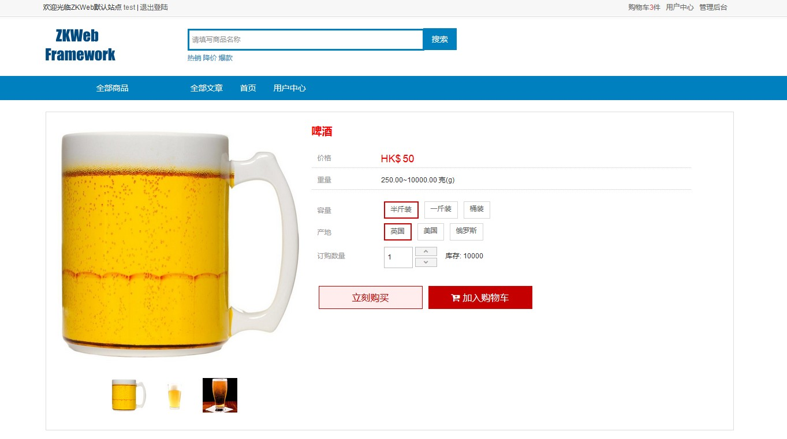

商品 (Shopping.Product)
商品插件提供了商城使用的商品管理和展示功能。
商品插件仅实现了最基本的商品功能，但提供了灵活的接口，可以在其他插件中实现更高级的功能。
商品类目的数据结构
类目下有规格和属性，
规格代表在购买时需要选择的值，例如颜色尺码套餐，
属性代表只用于显示的值，例如年份品牌。

商品的数据结构
商品可以关联多个分类和标签，商品可以选择一个类目并设置规格和属性。
商品可以设置价格和库存的匹配规则，符合指定的条件时使用指定的价格和库存（可以把有填写库存的规则看成一个SKU）。
商品可以设置对应的卖家，其他插件可以对有卖家的商品进行多店铺商城专用的特殊处理。

商品的管理界面

商品的列表页面

商品的展示页面

商品数据的详细解释
- Product 商品
- Category 商品类目，多对一，类目下包含了可以使用的规格和属性
- Name 类目名称
- Properties 类目包含的属性，多对多，例如"颜色"可以同时用在服装和自行车上
- Name 属性名称
- IsSalesProperty 是否销售属性，例如颜色和尺寸等是销售属性，年份和材质等是非销售属性
- ControlType 编辑时用的控件类型，有文本框，下拉框和多选框等
- PropertyValues 属性值列表，一对多
- Name 属性值名称
- DisplayOrder 显示顺序，从小到大
- CreateTime 创建时间
- LastUpdated 更新时间
- Remark 备注
- DisplayOrder 显示顺序，从小到大
- CreateTime 创建时间
- LastUpdated 更新时间
- Deleted 是否已删除
- Remark 备注
- CreateTime 创建时间
- LastUpdated 更新时间
- Deleted 是否已删除
- Remark 备注
- Name 商品名称
- Introduction 商品介绍，格式是Html
- Type 商品类型，默认有实体商品和虚拟商品
- State 商品状态，默认有已上架，等待上架和已下架
- Seller 卖家，可以没有卖家
- CreateTime 创建时间
- UpdateTime 更新时间
- DisplayOrder 显示顺序，前台展示时默认按这个顺序显示，从小到大
- Remark 备注，格式是Html
- Deleted 是否已删除
- Classes 关联的商品分类
- Tags 关联的商品标签
- MatchedDatas 商品匹配数据，一对多
- Conditions 匹配条件，类型是Dictionary
- Affects 影响的数据，类型是是Dictionary
- Price 价格，等于null时继续匹配下一项
- PriceCurrency 价格的货币，跟随价格匹配
- Weight 重量，等于null时继续匹配下一项
- Stock 库存，等于null时继续匹配下一项
- ItemNo 货号，等于null时继续匹配下一项
- BarCode 条形码，等于null时继续匹配下一项
- MatchOrder 匹配顺序，从小到大
- Remark 备注，纯文本
- Conditions 匹配条件，类型是Dictionary
- PropertyValues 关联的属性值，一对多，选中的规格和属性的值
- Property 属性，例如颜色
- PropertyValue 属性值，例如黑色
- PropertyValueName 属性值的别名
- Category 商品类目，多对一，类目下包含了可以使用的规格和属性
FAQ
商品类目和商品分类有什么区别？
类目包含规格和属性，只有一层且不应该作为展示时的过滤条件，
分类没有额外的数据，有多层且可以作为展示时的过滤条件。
例如服装类目包含规格"尺寸,颜色"和属性"品牌,年份"，
这个类目下的商品可以关联分类"上装,下装,鞋子"等。
商品的销售属性(规格)和非销售属性(属性)有什么区别？
销售属性(规格)在购买商品时需要选择，并且可以参与匹配数据，例如颜色和尺寸等。
非销售属性(属性)是固定的值，只能在编辑商品时设置一个，例如品牌和年份等。
为什么使用商品匹配数据储存价格和库存？
传统储存商品价格会使用SKU，例如黑色大码是一个SKU，价格就和这个SKU绑定。
但如果后面添加了套餐这个规格，以前的SKU就需要复制n份，这样会导致数据关联困难，
同样的对于删除规格处理起来也比较麻烦。
这个商品插件使用了匹配规则代替SKU表格，匹配规则可以按部分规格来决定价格，例如大码不管什么颜色都是一个价格。
匹配规则还可以根据订购的数量来决定价格，如果数量超过指定的数量时可以使用一个更便宜的价格，但共用一个库存。
匹配规则从上到下匹配，如果中途遇到空值则继续向下匹配，例子如下
| 条件 | 价格 | 库存 |
|---|---|---|
| 大码 黑色 订购数量>50 | 88 | 继承 |
| 大码 订购数量>50 | 89 | 继承 |
| 大码 | 100 | 10000 |
| 默认 | 101 | 20000 |
商品类型和状态可以扩展吗？
商品类型可以通过继承IProductType进行扩展。
商品状态可以通过继承IProductState进行扩展。
如果需要控制商品类型是否实体商品可以继承IAmRealProduct。
如果需要控制商品状态是否允许显示在列表页可以修改特征IAmVisibleToThePublic。
扩展商品类型可以实现一些高级功能，例如把商品分为团购商品和普通商品，再对团购商品进行特殊的处理。
商品属于卖家是怎样处理的？
商品可以属于单个卖家，也可以属于系统。
这个插件没有提供给卖家使用的管理界面，也没有提供卖家的店铺页面，需要这些功能应该使用关联的其他插件。
商品属于卖家时会影响到创建订单的处理，详细请查看订单插件的文档。